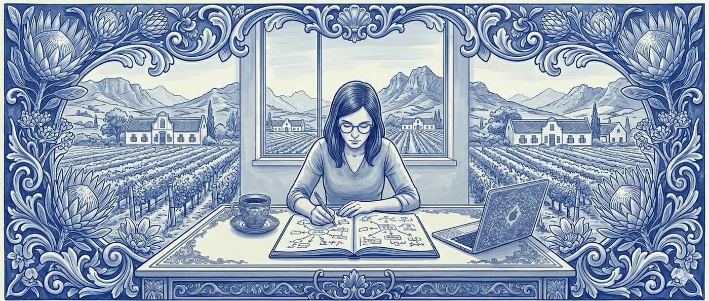

Building Think Orion's onboarding system

Starting without a process
When I joined Think Orion in January 2025, there was no formalised onboarding process. One of the cofounders, Manno, described what he wanted: brand overview, audience personas, competitor analysis, brand guidelines, channel-specific hooks. He left me to figure out what each of those should actually be and how they should fit together.
I spent three to four days on the first client. Then the next. Then the next. By the fourth or fifth, the shape of a system was visible underneath what had started as a stack of separate deliverables.
The stated problem, and the real one
The stated problem was that onboarding was slow. The real problem was different. When the founders signed a new client, the work handed over to partner success managers and media buyers who had no foundation to work from. They needed something they could open on day one and start operating from — not a thirty-page strategy document, not a deck, something usable. That's why the overview doc ended up at one page, and why it included channel-specific hooks (paid, email, landing) rather than abstract messaging principles. The receiving team needed a starting point per channel, not a strategy to translate.
The persona work leaned heavily on pain points because pain points are what media buyers actually need to write ads against. The competitor analysis was framed around messaging — how they compete, what they claim, and how our positioning could mitigate or sidestep theirs — rather than as a general market scan.
What the research caught
One thing the research caught early: a training course client whose product claimed to cure a specific human condition. Peer-reviewed literature was clear that the claim wasn't supportable in the form they were making it. I flagged this to the team. The marketing was already in production because the client's lead representative kept asserting the claim, and it took several months and a separate family member's intervention before the position shifted. The engagement eventually fell apart for unrelated reasons, but the research had identified the structural problem within the first week. That kind of catch is one of the arguments for doing the research seriously rather than quickly.
"Diagnostic depth surfaces things the sales conversation can't."
Productising the system
Around the time the agency had built up a body of these manual onboarding documents across multiple clients, Manno built a platform — trained on the outputs from the manual builds, hooked into the APIs the team needs. What had taken three to four days now takes about three hours. The structural deliverables are similar; the speed is real.
What speed gives, and what it costs
Running the productised version across roughly twenty programs at a prominent Middle Eastern university's online faculty over the past months, I've been able to see what the speed gives and what it costs. The structure of the research is preserved. The texture isn't, or isn't yet. When I ran the manual version on those early clients, I knew them — their competitors, their personas, the specific shape of their offer — well enough to walk into a meeting and brief the partner success managers from memory. Running twenty programs through the system in a fraction of that time, I don't know them the same way. I know the deliverables. The deliverables are good. The relationship between me and the underlying knowledge has changed.
The live question
What kind of knowledge should a content operations system encode, what kind can it not, and where does a human operator need to stay in the loop for the work to retain its depth?
It's a real engineering question that anyone building AI-assisted content systems is going to run into, and one of the more interesting parts of my role right now is being inside it.
Testimonials
Get in touch
Your team is using AI for content but the output doesn't feel right. I help you figure out why and what to change.
Email me and let's get your content working for your brand again.